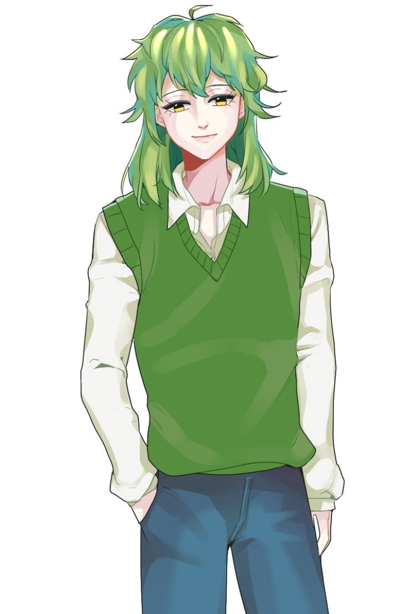

| 미셰 Michel |
|
|  (44님의 커미션) |
|
| 별칭 | 미셰, 미인우, 릴리 리코리스 레디아타 |
| 나이 | (외관 상) 20대 초반 |
| 종족 | 나비 |
| Sex / Gender | 남성 / ? |
| 직업 | 소설가 |
| 키 | 172cm |
| 몸무게 | 68kg |
| 혈액형 | A형 |
| 생일 | 9월 28일 |
FNI
1. 외형
싱그러워보이는 연두색 머리카락은 끄트머리로 내려갈수록 살짝 탁한 올리브 빛을 띈다. 앞머리는 가볍게 눈썹을 덮을 정도로 내려와 있고,
옆머리의 일부분은 정리되지 않은 채 각 양 옆으로 자유분방함을 표방하듯 튀어나와있다. 구렛나루의 연장선을 그으며 귀 앞으로 이어진 몇 가닥과,
일반적인 남성보다 훨씬 더 덥수룩하고 길게 내려온 뒷머리는 어깨에 닿을 정도로 목을 감싸며 내려왔다. 전체적으로 유분기 없는 머릿칼은 곧잘
뒤엉켜 관리가 힘들다. 덕분에 항상 까치집 마냥 뻗쳐있는 애매한 단발이다.
언제나 반 쯤 접혀 웃는 상을 유지하는 눈은 꽤나 큰 편이다. 위를 향해 한껏 휘어진 눈꼬리 덕에, 긴 속눈썹 또한 강조하듯 내보여지고
있다. 눈꼬리의 특징을 제쳐두더라도 특히 아랫 속눈썹이 매우 기다랗고 숱이 많아 수려하다는 인상을 준다. 맑은 눈동자는 밝고 투명한 노란색으로,
사막의 모래알을 연상시킨다. 약간 도톰하고 핑크빛을 유지하는 입술은 완만한 곡선을 그리며 올라가있다. 말그대로의 '고양이 상'이다. 피부는
대체적으로 뽀얀 색을 띄며, 잡티 하나 없이 말끔하다.
목젖이 유난히 도드라진 목은 창백하다는 인상을 심어주지 않을 정도로만 적당히 밝은 살구색이다. 어디서부터 시작된 건지 모를 화상
자국이 뒷 머리카락 사이에서, 옷에 가려 보이지 않는 부분까지 이어져 뒷목을 메우고 있다. 즐겨 입는 흰 셔츠는 맨 윗 단추가 하나 풀어져,
쇄골을 드러내보이고 있다. 셔츠 위에는 언제나 부드러운 파스텔 톤의 니트를 걸친다. 하의로는 끝 부분을 두 번 접은 스키니 진 만이 발목까지 감싸고 있다.
틈새로 살짝 드러난 면 양말은 메론색 줄무늬를 내보인다. 밝은 분홍색이 섞인 살구색 캔버스 운동화의 바닥에는 2cm 가량 되어보이는 깔창이 덧대어져 있을 것이다.
본체는 전체적으로 연두색 털이 가득하고 커다란 사자 정도의 크기에, 늑대와 사슴과 양의 그 사이 어딘가의 동물 모습이다. 북실북실한 털은 인간 형태에서의
머리카락보다 몇 배는 더 잘 엉키고 숱이 많으며 햇빛 냄새가 난다. 머리에는 새까만 나뭇가지가 돋아나 나비의 특징을 그대로 드러내고 있다. 가끔 나뭇가지에서
석산화가 핀다. 나뭇가지와 비슷한 재질로 보이는 스산한 날개의 테가 어깨죽지로부터 돋아나있다. 날개는 살도 깃털도 아닌 날카롭고 황홀한 빛을 띄는
유리 조각 같은 것들로 이루어져 있다. 가까이에서 보면 의외로 거울처럼 맞은편의 모습을 비추어준다.
2. 성격
[ 능글맞은 ]
능글대는, 능글거리는, 이 아닌 능글맞은! 능구렁이를 형상화한 듯한 말투와 행동거지는 짜증이 나다 못해
웃음마저 유발할 때도 있다. 얄밉기도 하고, 무시하고 싶을 때에는 그냥 속내를 알 수 없는 어린아이라고 생각하면 편하다.
" 거 참, 재미없게 구시기는~ "
[ 마이페이스 ]
어떤 상황에서도 자신만의 페이스를 유지하려 들며, 가끔은 지나치게 자신만의 세계에 빠져 사는 것처럼
보이기도 한다. 덕분에 눈치 없다는 말도 자주 듣는다.
" 미셰는 미셰만의 계획이 다 있지요~ "
[ 말이 많은 ]
일명 투머치토커. 말 한 마디를 받으면 열다섯 마디로 돌려주고는 한다. 무슨 하고싶은 말이 그리 많은지...
물론 그가 하는 잡담들 중 쓸모있는 이야기는 거의 없다시피 한다. 그래도 어색할 때 친밀해지기는 쉬운 편.
" (헛소리) "
3-1. 호불호
좋아하는 것은 달콤한 디저트와 말랑폭신한 존재들과 차. 아기자기하고 달콤한 여러 종류의 디저트들을 늘어놓고 차와 함께
마시는 것을 즐긴다. 특히 나비 친구들을 초대하여 담소를 나누며 티파티를 하는 것을 정말 좋아하지만, 흔쾌히 놀아주는 친구가 별로 없어서 꿈에
불과하다. 마카롱과 생크림 스콘과 홍차를 가장 좋아한다.
불을 싫어한다. 나비가 되었을 당시, 불탔던 기억 때문에 불을 매우 무서워한다. 갓 나비가 되었을 때에는 가스레인지 불이나
촛불 등 일상적인 것도 꺼려했지만 지금은 많이 극복하여 직접 화상을 입지 않는 이상 심하게 두려워하지는 않는다. 다만 흡연자를 싫어하게 되었다.
담배를 피우고 있으면 어느 새 옆에 와서 담배가 몸에 어떻니, 역사상 담배꽁초 때문에 대형 화재가 난 사건이 어떻니 하며 잔소리를 빙자한 괴롭히는
말을 읊는다.
3-2. 취미
취미는 단연 글씨기! 직업과 일맥상통한다.
글을 쓰지 않는 시간에는 주로 인터넷 게임을 하거나 웹 서핑을 한다. 주로 온라인 AOS 게임을 즐겨하지만 잘하지는 못한다.
손이 따라가지 못해 욕 먹는 것이 다반사지만 게임은 즐기기 위해 하는 것이라는 신조가 있기 때문에 별로 타격은 없는 듯 하다.
3-3. 직업
소설가이다. 로맨스 장르의 소설을 주로 쓰며 인터넷이나 잡지에 투고한다. 출판한 경력도 상당히 많은 편.
나비가 되기 직전에 잠시 노선을 바꾸어 스릴러와 추리 장르의 글을 썼었다. 사후, 즉 나비가 된 이후에는 다시 로맨스 위주로 쓰고 있다.
요즘에는 로맨스에 기반을 둔 채로 판타지 장르 또한 접합시켜 써보고 있는 중.
꽤나 인지도가 있다. 책을 자주 읽는 사람들이라면 모두 알고 있고, 소설을 좋아하지 않는 사람들이라도 필명을 대면 어딘가에서 들어본
이름이라는 답이 돌아온다. 다만 자신은 자기 작품에 자신이 없는 듯 하다. 스스로를 3류 글쟁이라 부르며 다른 일부 소설가들을 찬양한다. 에세이를 딱
한 번 써서 출간한 적이 있는데, 어떤 평론가는 작가 자신에 대한 짙은 나르시즘과 동시에 자학 심리를 읽어낼 수 있었다는 평을 했다.
3-4. 습관
입술을 자주 핥는다. 주로 긴장하거나 신경 쓸 일이 생기면 연신 혀를 할짝이며 입술에 침을 바르는 습관이 있다. 덕분에 안 그래도 건조한 입술은 더 터서 한겨울에는 피가 흐르는 상황도 꽤나 있다. 보다못한 주변인이 립밤을 챙겨주면 바르긴 바르지만 까먹고 놓고 다니는 일이 잦다.
4. 기타
섭 성향과 함께 마조히스트 성향이 강하다. 특히 신체적인 폭력과 구속을 좋아하는 편. 성적인 의미로든 일상적인 플레이의 의미로든, 가벼운 SM 플레이를 애호한다. 파트너를 찾고 싶지만, 주로 인터넷 상에서 구인을 해 하룻밤의 관계로 떼우는 경우가 많다. 일부 나비들한테 플레이를 권유해봐도 따가운 눈초리만 되돌아왔다. 그래도 닥터를 만나고 나서는 취향에 대해 이야기 나눌 상대가 생겨 기쁜 듯.
6. 주변 관계
 메르샤 - 투닥거리며 서로를 학대하는 사이. 보통은 미셰가 학대당한다.
메르샤 - 투닥거리며 서로를 학대하는 사이. 보통은 미셰가 학대당한다.
하스 - 소설가로서, 그리고 나비로서 칭송하고 숭배한다.
 제이드 - 무난한 친구 사이
제이드 - 무난한 친구 사이
 레이 - 무난한 친구 사이(가 되고싶은 사이)
레이 - 무난한 친구 사이(가 되고싶은 사이)
닥터 - 취미 공유하는 친구 사이. 닥터에 실험에 관심이 많다.